COMPUTER PROBLEMS 6.4
\(\def\ds{\displaystyle} \)
1 The Midpoint Rule is run with
interval \([0,1]\) and
step size \(h=0.1\). The resulting approximations are
\[\text{ (a)}\ \ \begin{array}{ccc}
t_i&w_i&\text{error}\\
0.0& 1.0000& 0\\
0.1& 1.0050& 0\\
0.2& 1.0200& 0\\
0.3& 1.0450& 0\\
0.4& 1.0800& 0\\
0.5& 1.1250& 0\\
0.6& 1.1800& 0\\
0.7& 1.2450& 0\\
0.8& 1.3200& 0\\
0.9& 1.4050& 0\\
1.0& 1.5000& 0\\
\end{array} \ \ \ \ \text{ (b)}\ \
\begin{array}{ccc}
t_i&w_i&\text{error}\\
0.0& 1.0000& 0.0000\\
0.1& 1.0003& 0.0001\\
0.2& 1.0025& 0.0002\\
0.3& 1.0088& 0.0003\\
0.4& 1.0212& 0.0004\\
0.5& 1.0420& 0.0005\\
0.6& 1.0740& 0.0007\\
0.7& 1.1201& 0.0010\\
0.8& 1.1847& 0.0014\\
0.9& 1.2730& 0.0020\\
1.0& 1.3926& 0.0030\\
\end{array}\ \ \ \ \text{ (c)}\ \
\begin{array}{ccc}
t_i&w_i&\text{error}\\
0.0& 1.0000& 0.0000\\
0.1& 1.2310& 0.0027\\
0.2& 1.5453& 0.0074\\
0.3& 1.9780& 0.0158\\
0.4& 2.5814& 0.0303\\
0.5& 3.4348& 0.0555\\
0.6& 4.6594& 0.0995\\
0.7& 6.4430& 0.1764\\
0.8& 9.0814& 0.3120\\
0.9& 13.0463& 0.5528\\
1.0& 19.1011& 0.9845\\
\end{array}\] \[\text{ (d)}\ \
\begin{array}{ccc}
t_i&w_i&\text{error}\\
0.0& 1.0000& 0.0000\\
0.1& 1.0000& 0.0000\\
0.2& 1.0003& 0.0001\\
0.3& 1.0022& 0.0002\\
0.4& 1.0097& 0.0005\\
0.5& 1.0306& 0.0012\\
0.6& 1.0785& 0.0024\\
0.7& 1.1778& 0.0052\\
0.8& 1.3754& 0.0124\\
0.9& 1.7711& 0.0338\\
1.0& 2.6107& 0.1076\\
\end{array}\ \ \ \ \text{ (e)}\ \ \begin{array}{ccc}
t_i&w_i&\text{error}\\
0.0& 1.0000& 0.0000\\
0.1& 1.0907& 0.0007\\
0.2& 1.1686& 0.0010\\
0.3& 1.2375& 0.0011\\
0.4& 1.2995& 0.0011\\
0.5& 1.3561& 0.0011\\
0.6& 1.4083& 0.0011\\
0.7& 1.4570& 0.0011\\
0.8& 1.5026& 0.0011\\
0.9& 1.5456& 0.0010\\
1.0& 1.5864& 0.0010\\
\end{array} \ \ \ \ \text{ (f)}\ \
\begin{array}{ccc}
t_i&w_i&\text{error}\\
0.0& 1.0000& 0.0000\\
0.1& 1.0000& 0.0000\\
0.2& 1.0003& 0.0000\\
0.3& 1.0019& 0.0001\\
0.4& 1.0062& 0.0002\\
0.5& 1.0151& 0.0003\\
0.6& 1.0311& 0.0003\\
0.7& 1.0564& 0.0003\\
0.8& 1.0931& 0.0003\\
0.9& 1.1426& 0.0001\\
1.0& 1.2051& 0.0001\\
\end{array}\]
3 Solving the equations with order four Runge Kutta for
the three step sizes \(h=0.1, 0.05\) and \(0.025\) are shown below
for parts (a), (b), (c), (d), (e), (f) respectively.
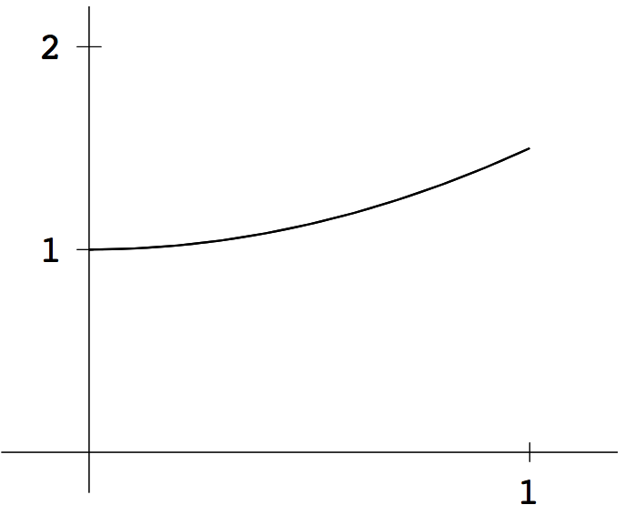
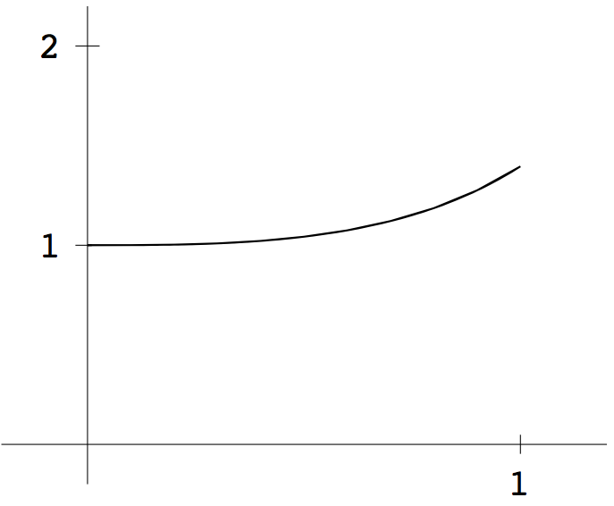
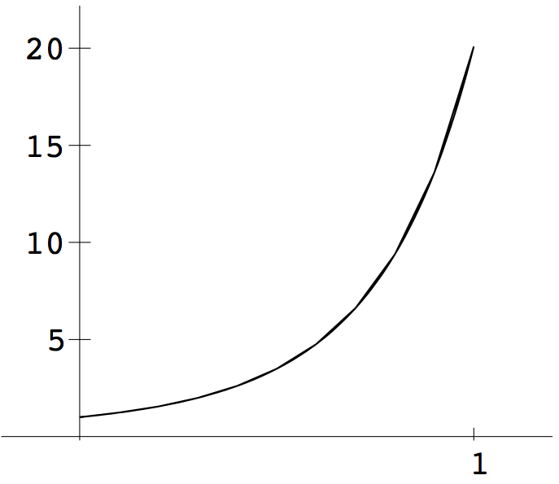
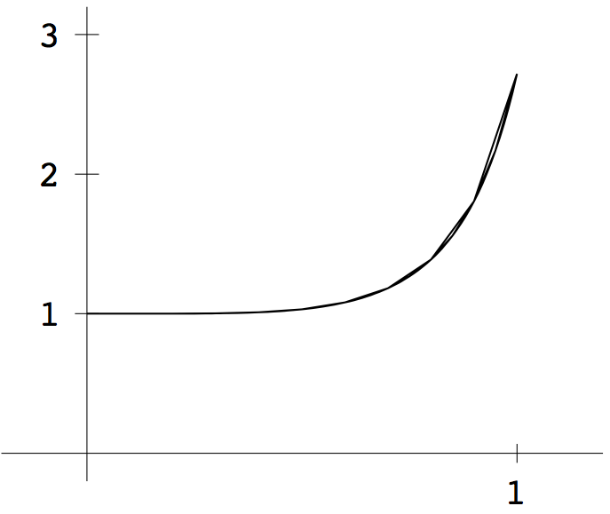
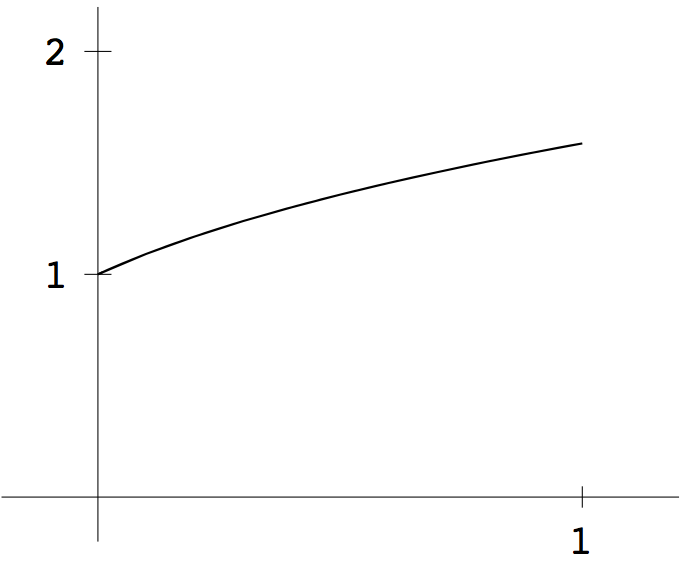
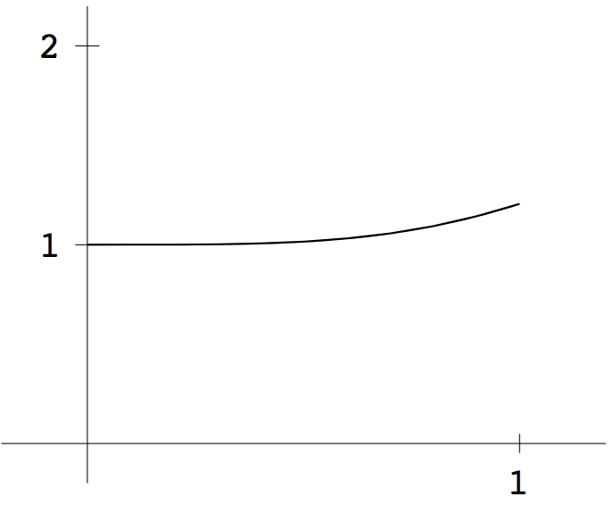
5 Runge-Kutta order 4 output with initial conditions (a) \(y_0=0\) and (b) \(y_0=1/2\). The correct solution from Exercise 6.1.7 is added (thicker curve). In (a), the approximate solution is covered by the exact solution.
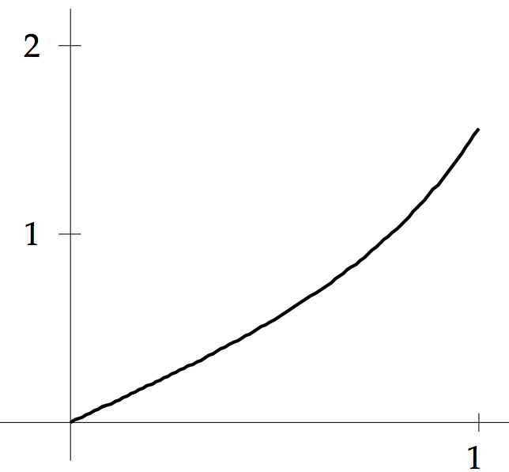
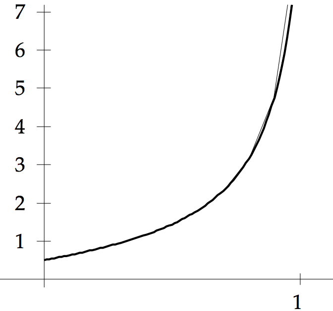
9 The fourth order Runge-Kutta method approximates equation (a)
without error. Applying RK4 to the IVPs of (b), (c), (d), (e) respectively in Exercise 6.4.1 gives
errors as shown below.
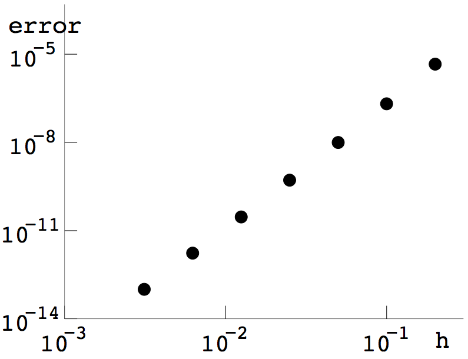
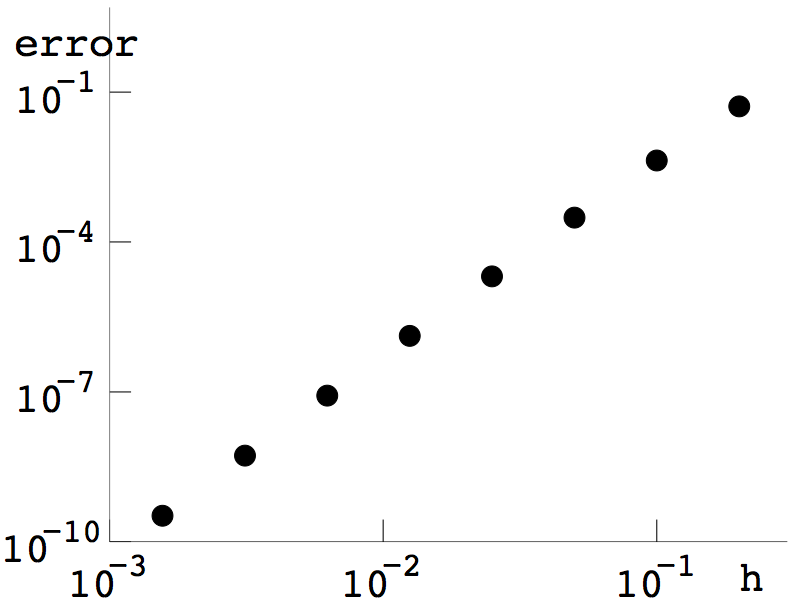
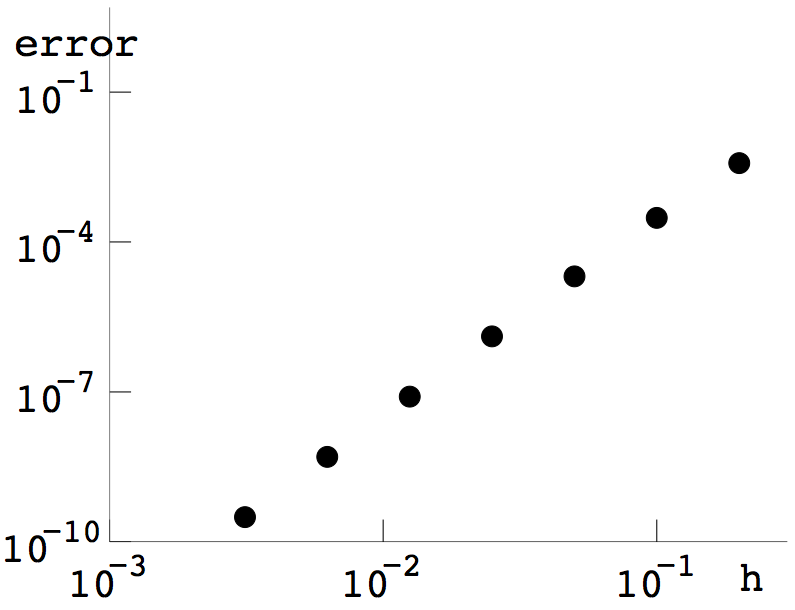
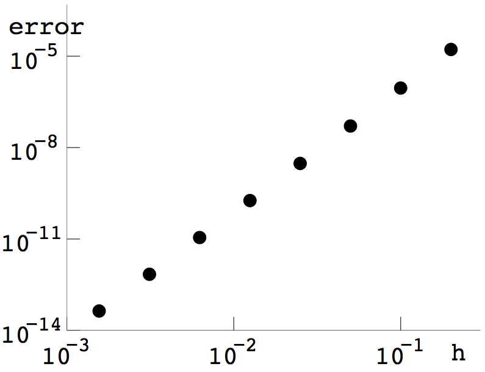
11 The ydot function for the Lorenz system
can be used with the order four Runge Kutta code to plot the attractor
with initial condition \((x_0,y_0,z_0)=(5,5,5).\) The orbit program
can be adapted by changing from four to three initial conditions,
eliminating the sun, and changing the axis limits. Plotting the \(x\) and
\(z\) coordinates of the Lorenz system gives the plot below.
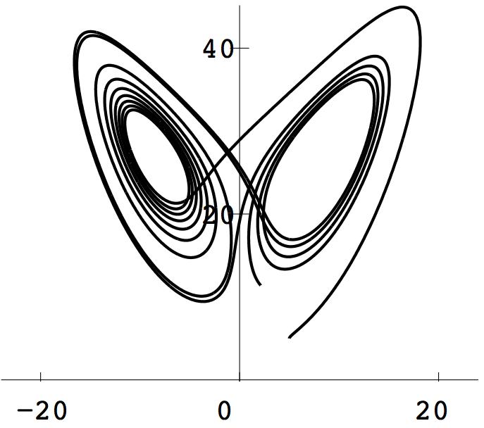
13 As an example we follow two trajectories of the Lorenz equations, one with
initial condition \((x,y,z)=(5,5,5)\) and the other with initial
condition \((5.00001,5,5)\). They agree on the symbol sequence
\(100000000110111001010\) during the first 15 time units, and then
disagree.
15 Replace the trapstep call in Computer Problem 6.3.11 with the folwing
RK4 code:
def rk4step(ydot,t, w, h):
s1 = ydot(t, w)
s2 = ydot(t + h/2, w + h*s1/2)
s3 = ydot(t + h/2, w + h*s2/2)
s4 = ydot(t + h, w + h*s3)
return w + h*(s1 + 2*s2 + 2*s3 + s4)/6
Compared with the trapstep version, the oribts stay closed for a much longer
time period.
17 Similar to 15. Replace trapstep with rk4step in the
code developed for Computer Problem 6.3.15.